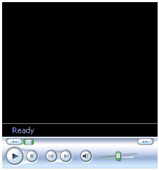

Bem-vindo ao arquivo de ajuda do AutoView. O AutoView foi desenvolvido pelo AutoTrain e-Learning como um sistema para incluir vídeo, slides e sub-títulos juntos para formar uma apresentação on-line. Todo o sistema AutoView é escrito em Javascript, portanto é essencial que você tenha essa linguagem ativada no seu navegador.
As apresentações do AutoView podem ser disponibilizadas em diversos formatos. O AutoView tentará detectar automaticamente os plugins disponíveis no seu computador e selecionar o mais apropriado para o seu sistema. Você encontrará maiores informações sobre como selecionar formatos de vídeo e de slides nas seções abaixo, mas provavelmente isso não será necessário na maioria das vezes.
Selecione o tópico sobre o qual você precisa de ajuda da lista abaixo:
Você pode encontrar notas técnicas adicionais e ajuda sobre problemas conhecidos, em inglês, em http://autoview.autotrain.org/supportdb
O AutoView é escrito para ser compatível com quaisquer navegadores e plataformas, tanto quanto possível, de acordo com a tecnologia atual. Entretanto, devido às complexas interações entre muitos compontentes de software que o AutoView requer, poderá haver casos em que o software não funcionará como esperado.
O AutoView é compatível com uma variedade de navegadores e sistemas operacionais (incluindo Internet Explorer, Mozilla Firefox e Opera). Uma lista completa de todas as questões conhecidas sobre navegadores e compatibilidade com navegadores é mantida em http://autoview.autotrain.org/browsernotes.
Para obter os efeitos desejados nessas apresentações, foi necessário fazer uso considerável de JavaScript. Consequentemente, para ver uma apresentação, você deve estar usando um navegador compatível com JavaScript e você deve ter o JavaScript ativado.
Além disso, certas coisas precisaram ser feitas, para obter os efeitos que desejávamos, que podem ser explicitamente impedidas em seu navegador, dependendo de suas configurações de segurança. Por exemplo, no Internet Explorer o Quicktime Player é um controle ActiveX e para mudar a posição do vídeo em responsta a um clique no menu de slides, ele tem que receber uma mensagem do script. É possível, nas configurações de segurança do Interner Explorer tanto desativar todos os controles ActiveX ou desativar o script desses controles, mesmo que eles estejam definidos como de scritpt seguro.
Se o AutoView tentar fazer algo que não
é permitido
pelas suas configurações de segurança,
você
receberá um aviso de erro de script.
você receber um
aviso desse tipo, pode valer a pena rever suas
configurações de segurança para
verificar se essa
poderia ser a causa.
Nós não gostamos de forçar os usuários a mudar suas configurações, particularmente quando isso se refere à sua escolha de configurações de segurança. Se você quiser ver a apresentação, mas suspeitar que você está recebendo mensagens por causa das suas configurações de segurança, tente desativar a sincronização de slides. Isto significa que você perderá a possibilidade de controlar o vídeo do menu de slide ou os botões acima dos slides, mas isto deverá impedir que erros sejam gerados.
A interface e as apresentações do AutoVideo podem ser apresentadas em diversos idiomas; você pode escolher seu idioma usando a caixa de cortina mostrada à esquerda, abaixo.
| >>> | |
Esta caixa contém o conjunto de opções de idioma disponíveis para todos os elementos da apresentação que você está assistindo. Entretanto, nem todos os elementos da apresentação estão disponíveis em todas as línguas listadas na caixa, portanto mudando esta opção pode não mudar o idioma de todas as partes da apresentação. Se você quiser saber quais os componentes da apresentação tem uma opção de idioma disponível, clique no botão + para mostrar o conjunto completo de opções de idioma (veja na figura acima, à direita). Elementos que não estejam listados aí não têm nenhum idioma alternativo. Se as opções de idioma estiverm ausentes, então todos os componentes da apresentação estão disponíveis apenas em uma língua.
Algumas apresentaçõs do AutoView podem conter uma lista de miniaturas de slides. Se essas miniaturas estiverem disponíveis, então você pode ativá-las e desativá-las usando os botões de miniatura mostrados abaixo.

Os slides do AutoView podem estar disponíveis em diversos formatos conforme os requisitos do seu provedor de conteúdo. Apresentações também podem ser oferecidas sem slides, portanto esta seção pode não ser relevante para todas apresentações.
Os formatos disponíveis para a apresentação que você estiver vendo estão listadas na seção de opções de slides, que pode ser expandida clicando no botão +. O display expandido mostrará todos os formatos de slides disponíveis, com o formato atual em negrito. Simplesmente clique no formato que você deseja para mudar os slides. Se uma opção estiver em cinza, isto significa que o AutoView detectou que você não tem o software adequado instalado paa usar esse formato. Você pode escolher esse formato mesmo assim, clicando nele se você quiser.
| >>> |  |
Note: Se a seção de opções de slide estiver ausente, isso significa que não há formatos alternativos de slide disponíveis.
O menu de opções de slide também inclui um controle de 'Tamanho de Slide' que possibilita que você altere o tamanho relativo do vídeo e dos slides.

Você pode navegar os slides escolhendo o slide que você deseja ver na caixa de cortina (mostrada acima), que está normalmente localizada no alto à direita da janela do navegador. Você também pode mover para frente e para trás dos slides usando os botões '<' e '>'.
Normalmente, mudar os slides poderá causar a
posição do vídeo ser movida para
corresponder ao
slide atual. Você pode ativar e desativar este comportamento
cliclando no botão 'Sincronia Ligada'/'Sincronia Desligada'.
Desligar a sincronização de slides
também
fará com que os slides parem de mudar enquanto o
vídeo
estiver rodando.
Você pode ver um resumo imprimível de
todos os slides
(se disponível) clicando o botão 'Todos Slides'.
Algumas apresentações podem conter sub-títulos que podem ser ativados e desativados usando os controles mostrados abaixo:
Você pode mover os sub-títulos para trás e para a frente usando os botões '<' e '>' que são mostrados nos sub-títulos. Além disso, se sub-títulos estiverem disponíveis então você pode ver e imprimir uma transcrição da apresentação clicando no botão 'Transcrição'.
Os vídeos do AutoView podem ser disponibilizados em diversos formatos e velocidades de acordo com os requisitos de seu provedor de conteúdo.
Os formatos disponíveis para a
apresentação que
você estiver vendo estão listados na
seção de opoções de
vídeo, que pode
ser expandida clicando no botão +. A lista expandida
mostrará todos os formatos de vídeo
disponíveis,
com o formato atual em negrito. Simplesmente clique no formato que
você desejar para mudar o vídeo. Se uma
opção estiver em cinza (como o Windos
Media no
exemplo abaixo) isto significa que o AutoView detectou que
você
não tem o software adequado instalado para usar o formato.
Você ainda pode escolher esse formato mesmo assim, clicando
nele,
se desejar.
| >>> |  |
Em alguns casos, se o provedor da apresentação não for compatível com vídeo streaming, você também poderá ver informações adicionais sobre a velocidade da conexão adequada para cada vídeo. Por exemplo: RealPlayer (Modem) para usuários de modem de 56k, RealPlayer (Banda Larga) para conexões de banda larga de 256k ou mais.
In some cases, if the presentation providor does not support multi-rate video streaming, you may see additional information on the connection speed each video is suitable for. eg RealPlayer (Modem) for 56k Modem users, RealPlayer (Broadband) for 256k broadband connections and better.
Note: Se a seção de opções de vídeo estiver ausente, isto significa que não há formatos de vídeo alternativos disponíveis.
Você também pode gravar a
posição atual
do vídeo para que você possa voltar a ele mais
tarde,
clicando no botão 'Gravar' e depois restaurar sua
posição usando o botão 'Carregar'
(Este
botão estará em cinza se você
não tiver
gravado uma posição).
O conjunto completo de formatos disponíveis é o seguinte (cliqeu no link para ver informação sobre cada formato):
Note: Não é necessário que você tenha todos estes plugins instalados para usar o AutoView. Desde que você tenha um plugin que corresponda aos formatos disponíveis no seu provedor de conteúdo, o AutoView funcionará corretamente.
Real Player |
|
|
O Real Player é disponibilizado pela Real Networks e pode ser baixado para Windows, Apple Mac and Linux/Unix from http://www.realnetworks.com/info/freeplayer/ Da esquerda para a direita, os controles são:
A caixa inferior mostra o processo de carregamento e o índice de hora atual enquanto rodando. Configurações de BandaPara mudar a configuração de banda no Real Player 10, siga os seguintes passos:
|
Quicktime |
|
|
O QuickTime é fornecido pela Apple e pode ser
baixado (com iTunes) para Apple Mac e Windows
2000/XP de Usuáriosvdo Windows 98/ME precisam usar uma versão mais antiga do QuickTime que pode ser baixada de http://www.apple.com/support/downloads/quicktime652forwindows.html. Usuários do Linux para acessar video streams Quicktime podem tentar o software Crossover da Codeweavers que funciona razoavelmentemente bem com o AutoView. Da esquerda para a direita, os controles são:
Configurações de BandaPara mudar a configuração de banda no QuickTime 7, siga os seguintes passos:
|
Windows Media Player |
|
|  |
O Windows Media Player é fornecido pela Microsoft como parte do sistema operacional Windows. Usuários do Windows XP devem já ter uma versão adequada do Windows Media Player. Usuários de versões mais antigas do Windows precisarão atualizar para pelo menos a versão 7 do Windows Media Player para usar as apresentações do AutoView. Você pode baixar atualizações do Windows Media Player de http://www.microsoft.com/windowsmedia/. Da esquerda para a direita, os controles da primeira linha são:
Da esquerda para a direita os controles da linha inferior são:
Configurações de BandaPara mudar a configuração de banda do Windows Media Player 9, siga os seguintes passos:
|
Flash Video |
|
|
Flash Video é parte do Adobe Flash plugin e é compatível com a maioria das combinações de navegadores e sistemas operacionais. A versão mais recente do plugin Flash pode ser baixada de http://www.adobe.com Da esquerda para a direita, os controles são:
AutoView usa o FlowPlayer para controlar o playback de vídeos Flash. Você pode saber mais sobre o FlowPlayer aqui. |
VideoLAN Player |
|
 |
O VideoLAN player é um video player gratuito que é atualmente compatível com o AutoView apenas com o Firefox. O media player VideoLAN VLC pode ser baixado de http://www.videolan.org/. Da esquerda para a direita, os botões da linha superior de controles são:
Da esquerda para a direita, os botões da linha inferior de controles são:
|
Java Audio Player |
|
|
O Java Audio Player pode fazer apresentações no modo Apenas Áudio usando o plugin fornecido pela Sun Microsystems. Você pode baixar o Java Plugin de http://www.java.com. Da esquerda para a direita, os controles são :
|